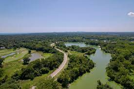

Waterfront
Glencoe Beach
Glencoe Park District is home to Lake Michigan's Glencoe Beach. It offers more than just a scenic view of Lake Michigan. It is home to a pier, beach house, sprayground, sun shelters, beach rentals, events and classes, life guards on duty, sand volleyball, and a complimentary beach cart to assist patrons with accessing the beach. Paddle-boards, sailboats, and kayaks are available for daily rental. During the off-season, the beach is open to vistors without a season pass from sunrise-sunset. Located at: 999 Green Bay Rd., Glencoe, IL 60062
Skokie Lagoons
The Skokie Lagoons cover 894 acres and offer water exploration activities such as: kayaking, canoeing, fishing, and public boat access. The lagoons also have hiking and biking trails, as well as picnic areas. Located at: Tower Rd, west of Forestway Dr Cook County, IL 60093
